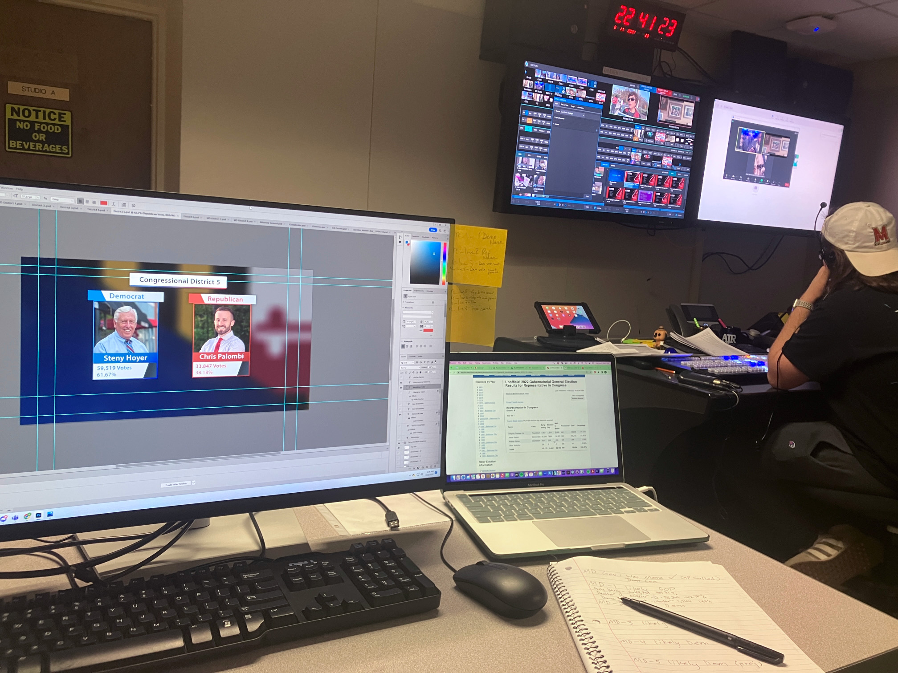
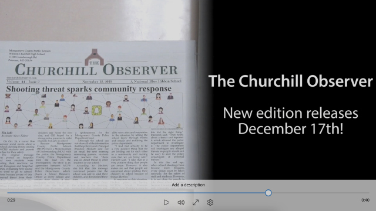

Fall 2023: CNS-TV promo video
I played a part in filming and editing this promotional video for CNS-TV, the broadcasting channel of the Capital News Service at the University of Maryland. This video was produced as a group project for a promo production course.
Spring 2023: Animated informational video about electoral systems
A video I animated as the final project for a journalism course on motion graphics and data visualization
Spring 2023: Recreation of Vox animation
As part of my coursework for a motion graphics journalism class, I used Adobe Animate to recreate this animation sequence from a Vox video. The original sequence is played first, followed by my recreated version.
Fall 2022 - Spring 2023: Remade miscellaneous CNS-TV graphics
During my time as a student working on CNS-TV, I remade some of the graphics used on the show. Most of my remade graphics are still being used on the broadcast. Additionally, I had variously been a camera operator, floor director and graphics operator on the show.
Fall 2022: CNS-TV election night graphics and animations
On election night in 2022, I was in charge of producing graphics, graphics templates and animations for the show. This also involved producing graphics in real time based on the latest election board information that was coming in. I created the red/blue wipe animation in After Effects on very short notice.

Summer 2022: Remade news article with my own info graphics and web design
As part of the final assignment for a data visualization class, I readapted a New York Times article about the then-impending resignation of Boris Johnson into my own website design with my own data graphics and design.
Click here to view
Spring 2022: News videography story
A news story I filmed and edited where I interviewed my friend about his experiences with celiac disease and its impact on his life.
Summer 2021: News reporting writing sample
A news story I wrote in AP style for a news writing and reporting course.
Click here to view
Fall 2019: High school newspaper promo video
A promotional video I directed, filmed and edited in order to help promote my high school's newspaper.

{kind=link}
{kind=link}
{kind=link}
{kind=link}
{kind=link}
{kind=link}
{kind=link}
{kind=link}